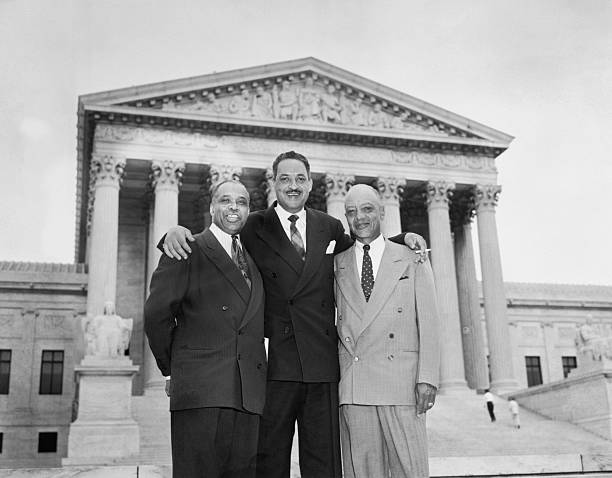
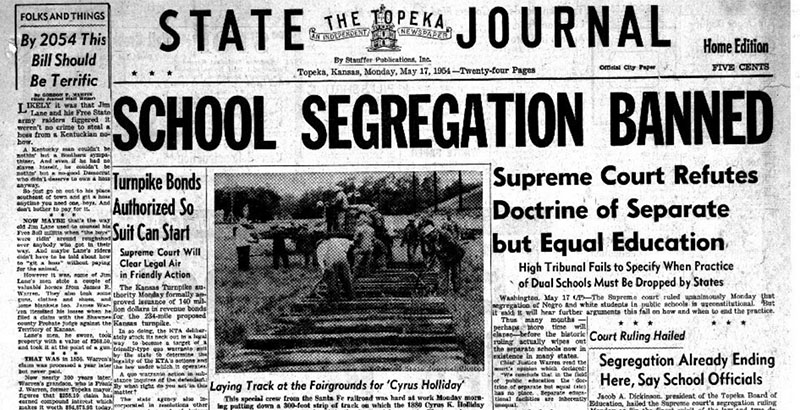

The Decision and Its Immediate Impact
May 17, 1954: A Unanimous Verdict
Photo: Getty Images
On May 17, 1954, Chief Justice Earl Warren read the Court's unanimous opinion in Brown v. Board of Education. The courtroom was packed with journalists, attorneys, and civil rights advocates who understood they were witnessing a historic moment. Warren spoke for less than thirty minutes, but his words transformed American constitutional law.
The opinion's reasoning was straightforward and powerful. Warren reviewed the history of the Fourteenth Amendment and previous Court decisions on education. He acknowledged that the amendment's original intent regarding segregated schools was inconclusive. However, Warren declared that the Court must decide the case based on public education's current importance in American life, not nineteenth-century conditions.
"Does segregation of children in public schools solely on the basis of race, even though the physical facilities and other 'tangible' factors may be equal, deprive the children of the minority group of equal educational opportunities? We believe that it does." Chief Justice Earl Warren, Brown v. Board of Education, 1954
Supreme Court Opinion, 347 U.S. 483 (1954)
Warren explained that education had become perhaps the most important function of state and local governments. In modern America, education was the foundation for good citizenship and success in life. To separate Black children from others solely because of their race generated a feeling of inferiority that might never be overcome. Segregation with the sanction of law had a tendency to retard children's educational and mental development.
The Chief Justice then delivered the opinion's most famous passage, directly overturning Plessy v. Ferguson. He concluded that in public education, the doctrine of separate but equal had no place. Separate educational facilities were inherently unequal. Therefore, the plaintiffs had been deprived of equal protection of the laws guaranteed by the Fourteenth Amendment.
The Psychology of Segregation
The Court's opinion incorporated social science research on segregation's psychological effects. Warren cited studies by Kenneth Clark and other psychologists in a now-famous footnote. While some criticized the Court for relying on social science rather than purely legal reasoning, this approach emphasized that segregation caused real harm to real children.
The opinion recognized that separating Black children from white children of similar age and qualifications solely because of race generated feelings of inferiority regarding their status in the community. This psychological damage affected children's motivation to learn and deprived them of benefits they would receive in integrated schools. The Court understood that legal segregation conveyed a message of Black inferiority that contradicted the Constitution's promise of equal citizenship.
Brown II: Implementation
The Court postponed deciding how to implement its decision. In 1955, after hearing additional arguments, the justices issued Brown II, which addressed the remedy for segregation. Rather than ordering immediate desegregation, the Court instructed lower courts to require school districts to admit students to schools on a nondiscriminatory basis "with all deliberate speed."
This phrase proved controversial and problematic. While the Court hoped to give southern states time to adjust and reduce resistance, many districts exploited the vague timeline to delay integration indefinitely. "All deliberate speed" became an excuse for "no speed at all" in many communities. Some school districts did not integrate until the 1970s, more than fifteen years after Brown.
Immediate Reactions
Reactions to Brown divided sharply along regional and racial lines. African Americans celebrated the decision as a tremendous victory. The NAACP proclaimed May 17 a second Emancipation Day. Black newspapers ran jubilant headlines declaring the death of Jim Crow. Civil rights activists understood that while Brown did not immediately integrate schools, it provided powerful legal and moral ammunition for challenging all forms of segregation.
Photo: Library of Congress
Many white southerners reacted with fury and defiance. Mississippi Senator James Eastland declared that the South would not abide by the decision. Georgia Governor Herman Talmadge compared the ruling to Soviet oppression. Southern politicians began organizing resistance, vowing to preserve segregation by any means necessary. Some proposed closing public schools entirely rather than integrating them.
In March 1956, ninety-six southern congressmen signed the Southern Manifesto, denouncing Brown as an abuse of judicial power. They pledged to use all lawful means to reverse the decision and maintain segregation. This document encouraged massive resistance and suggested that defying the Supreme Court was legitimate.
Resistance and Violence
Southern states enacted laws designed to prevent or delay integration. Some created pupil placement systems that allowed officials to assign students based on criteria other than race, which they used to maintain segregation. Others passed laws allowing governors to close integrated schools. Virginia even shut down entire school systems rather than integrate.
Violence accompanied legal resistance. In 1957, the Little Rock Nine faced angry mobs when they attempted to integrate Central High School in Arkansas. Governor Orval Faubus called out the National Guard to prevent integration, forcing President Eisenhower to send federal troops to protect the students. Television cameras broadcast images of white adults screaming at Black teenagers, showing the world the ugly face of segregation.
Photo: Getty Images
Photo: Getty Images
Other communities experienced similar confrontations. When James Meredith attempted to enroll at the University of Mississippi in 1962, riots erupted that left two people dead. Federal marshals protected Meredith as he attended classes. The integration of schools repeatedly required federal intervention because state and local officials refused to comply with Brown.
Progress and Setbacks
Despite resistance, Brown achieved important immediate victories. Border states like Delaware, Maryland, and West Virginia began integrating schools relatively quickly and peacefully. Some southern cities, including San Antonio and Louisville, also desegregated without major incidents. These successes demonstrated that integration could work when political leaders supported it.
However, progress came slowly in the Deep South. As late as 1964, less than two percent of Black students in the South attended integrated schools. Only after Congress passed the Civil Rights Act of 1964, which threatened to withhold federal funding from segregated schools, did integration accelerate significantly. The combination of legal pressure, federal legislation, and changing public opinion gradually overcame resistance.
Brown also inspired civil rights activism beyond schools. The decision energized the movement by proving that the federal government could be an ally in fighting segregation. Within months of the ruling, Rosa Parks refused to give up her seat on a Montgomery bus, sparking the bus boycott that launched Martin Luther King Jr.'s career. Brown demonstrated that segregation was both morally wrong and legally indefensible, emboldening activists to challenge discrimination wherever they found it.
Video: News Coverage of Brown Decision
Video: NBC News Archives, May 17, 1954
Note: Total multimedia length across all pages must not exceed 3 minutes